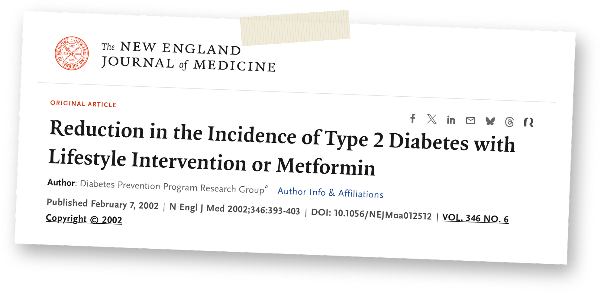

@fairhealth.br
Dia Mundial do Diabetes · 14/11
Estilo de vida
também é
tratamento
sério.
O que um estudo com mais de 3 mil pessoas mostrou sobre mudar a rotina.
Arraste para o lado →
Dia Mundial do Diabetes · 14/11
tratamento
sério.
O que um estudo com mais de 3 mil pessoas mostrou sobre mudar a rotina.
Arraste para o lado →

O tamanho do problema
1 em 3
dos 16,6 milhões de brasileiros
com diabetes não sabe que tem.
IDF Diabetes Atlas, 11ª edição (2025)
Adultos de 20 a 79 anos, estimativas de 2024. O Brasil é o 6º país com mais casos no mundo.
Mesmo assim, “cuide da alimentação e faça atividade física” ainda soa como a parte menos séria do tratamento.
Parece conselho. A ciência trata como tratamento.
O estudo
caíram 58%
com estilo de vida.
De cada 100 pessoas com pré-diabetes, quantas desenvolveram diabetes por ano?
11,0
casos
Placebo
comprimido sem efeito
7,8
casos
Remédio
metformina · 31% menos
4,8
casos
Estilo de vida
programa · 58% menos
58% menos
Quanto menor a barra, menos gente desenvolveu diabetes.
Nada radical: 150 minutos de atividade física por semana (cerca de 30 minutos, 5 dias) e a meta de perder 7% do peso.
Diabetes Prevention Program, New England Journal of Medicine, 2002: 3.234 adultos em 27 centros nos EUA, 2,8 anos em média. Não substitui orientação médica.
Conhece alguém que acha que é “só conselho”? Mande este post.
O que fez a diferença
O difícil é fazer sozinho.

Os outros dois grupos
1
conversa de 20 a 30 min por ano, mais material por escrito
Programa de estilo de vida
16
encontros individuais nos primeiros 6 meses. Depois, mensais.
E o efeito durou: ao longo de 15 anos, esse grupo teve, em média, 27% menos casos.
DPP (New England Journal of Medicine, 2002) e DPP Outcomes Study (Lancet Diabetes & Endocrinology, 2015).
Informação todo mundo tem. Acompanhamento, quase ninguém.
No Escritório do Cuidado
A Medicina do Estilo de Vida
olha para 7.
Alimentação e atividade física são dois dos 7 pilares. Os outros também pesam, e um interfere no outro: os pilares não funcionam isoladamente.
1. Alimentação saudável
2. Movimento
3. Sono de qualidade
4. Gerenciamento de estresse
5. Manejo de vícios
6. Relacionamentos
7. Espiritualidade e propósito
os 2 do
estudo
No Escritório do Cuidado, o plano é individual: parte do que importa para cada pessoa e é revisto a cada retorno.
Medicina do Estilo de Vida com atendimento dentro da empresa e retornos para rever o plano.
Quer levar para a sua empresa?
Comente CUIDADO e enviamos na DM
como funciona o diagnóstico gratuito.
Na sexta: como levar a fairhealth para a sua empresa.